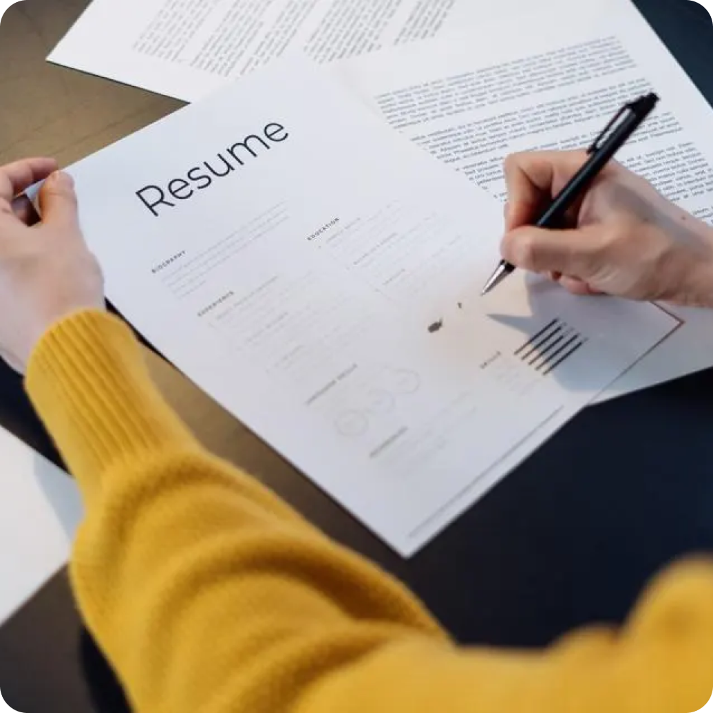
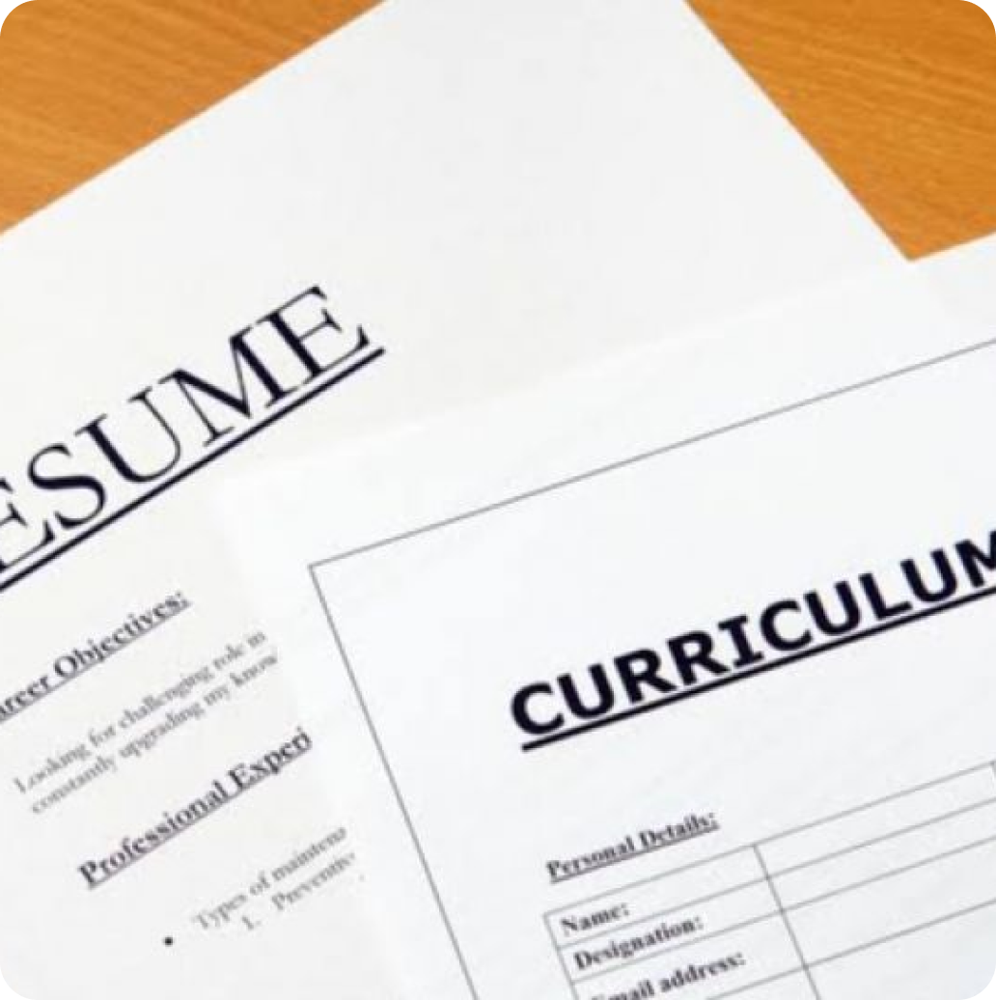

Feminin Force
Home
Artikel
Video
Ruang Karir
Komunitas
Tentang Kami
Kontak & Kerja sama
Profil
RUANG KARIR
“Tingkatkan Karir Anda: Memberdayakan Wawasan Perempuan”
Tips Personal Branding
Tips Menulis CV
Persiapan Wawancara
Strategi Work-Life Balance

WeAreTechWomen | 31 Maret 2023
CV untuk Wanita yang Memasuki Industri STEM
• 2 hari lalu
Lpkia.ac.id | 20 November 2023
6 Hal Penting Ketika Membuat CV
• 3 hari lalu
Sohib IndonesiaBaik |17 Februari 2023
7 Kesalahan Dalam Pembuatan CV yang Sering Kita Lakukan
• 3 hari lalu
Prosple.com | 30 Maret 2023
Teknik Menyesuaikan CV Dengan Pekerjaan yang Di Lamar
• 3 hari lalu

Prosple.com | 31 Maret 2023
Perbedaan CV dan Resume Beserta Peruntukannya
• 2 hari lalu
Prosple.com | 30 Maret 2023
Cara Membuat CV Untuk Magang & Fresh Graduate
• 3 hari lalu
Prosple.com | 30 Maret 2023
Kesalahan Dalam CV Yang Menyebabkan Gagal Lolos Seleksi Administrasi
• 3 hari lalu
Kumparan.com | 30 Maret 2023
Cara Membuat VC ATS dan Profesional Untuk Lamaran Kerja
• 3 hari lalu